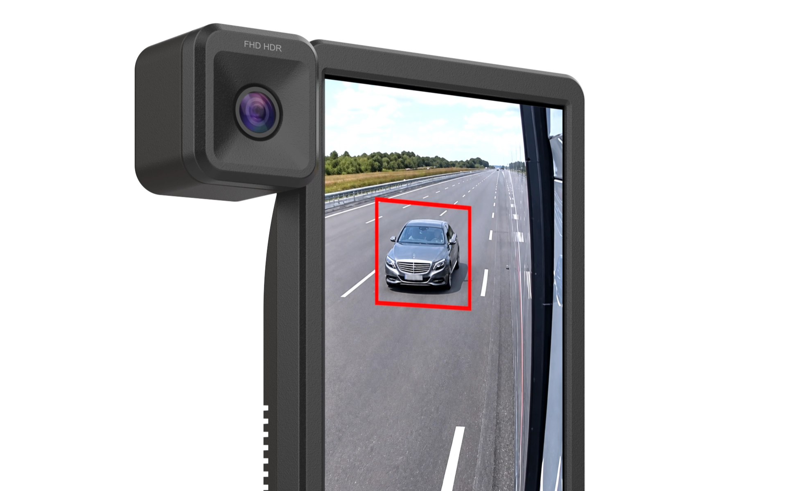
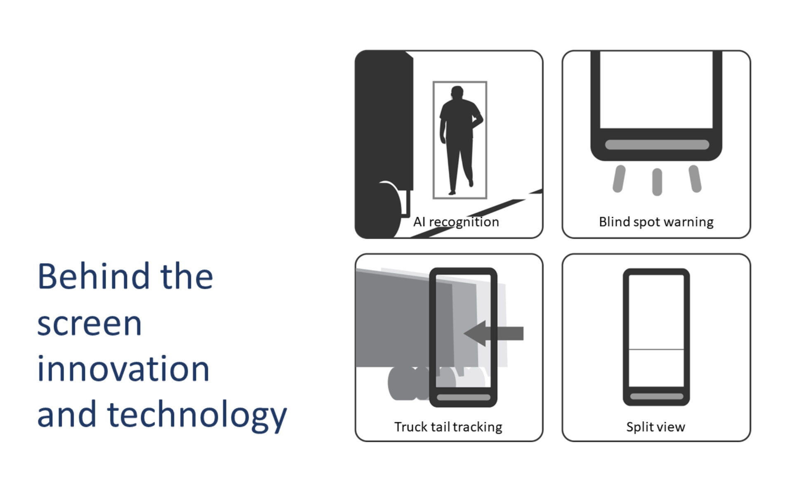
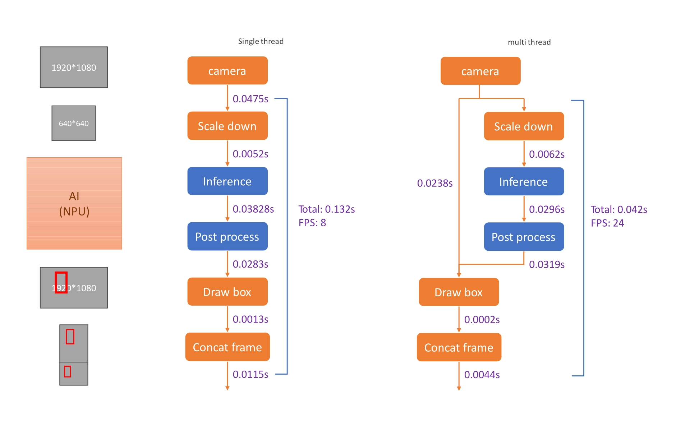

AI 卡車電子後視鏡
整合雙視角影像與 AI 辨識，輔助駕駛留意視野盲區。
大型卡車在車側與車後方存在視野盲區，駕駛仍需持續注意影像中的目標與路況。本案以雙視角影像搭配邊緣 AI 辨識，在畫面上標記行人與障礙物作為輔助提示；同時將影像顯示與推論處理分開，避免等待辨識影響連續觀看，並以清楚的提示層級協助駕駛快速確認畫面，收斂為可驗證的行車輔助展示原型。
開發範圍Linux RKNN 推論軟體、影像管線架構，以及工業與機構設計。

01 / FEATURES
盲區防護與視野創新設計
針對大型車輛視野盲區，整合邊緣推論與動態視野調度：
AI 物件辨識
調用 NPU 即時辨識盲區內的行人與障礙物，動態繪製警戒框。
盲區主動警示
目標進入設定範圍時觸發動態視覺提示，協助駕駛留意盲區目標。
雙分割視角顯示
長條螢幕同步呈現車側廣角與後方特寫，兼顧全局與細節。

02 / ARCHITECTURE
多執行緒擷取、推論與即時顯示
將顯示串流與 AI 推論拆解為多執行緒架構，讓主影像持續輸出，辨識結果則以標記提示疊加於畫面。
相機平行擷取與暫存
雙鏡頭影像平行擷取，主顯示串流不等待推論，維持連續影像輸出。
RKNN 非同步推論管線
模型縮放、RK3588 NPU 推論與後處理獨立於背景執行緒，運算不阻斷畫面輸出。
雙視角座標投影與疊加
將推論標記框精確投影至雙視角畫布，完成 12.3 吋螢幕低延遲合成輸出。

03 / OUTCOME
整合邊緣 AI 與雙視角顯示的原型機
完成 12.3 吋 AI 卡車電子後視鏡展示原型，整合邊緣運算平台、Linux RKNN 推論軟體、影像管線架構與雙視角行車監控介面，呈現影像持續顯示及 AI 標記提示的行車輔助功能。